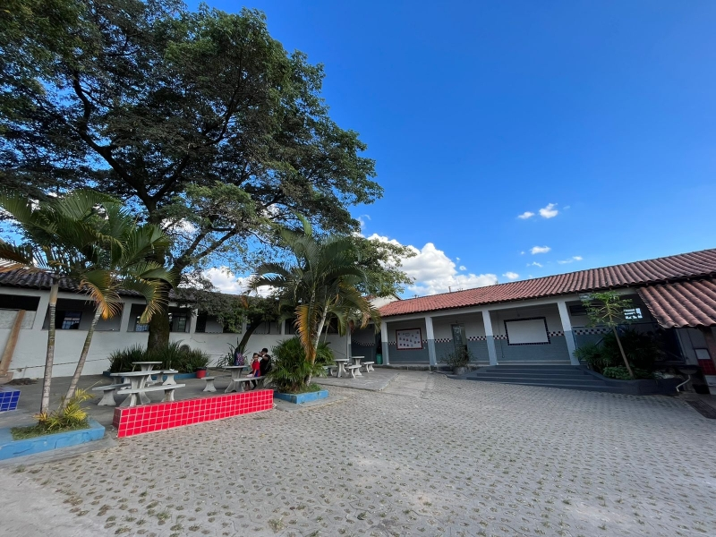
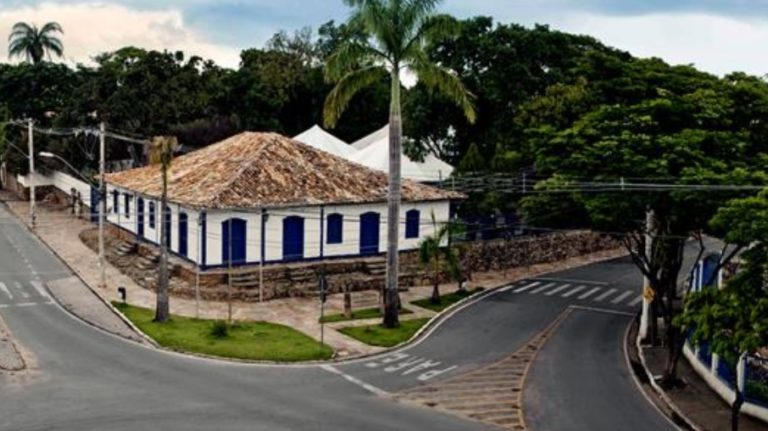
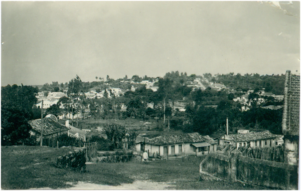

Pais e alunos da Escola Municipal Sebastiana Diniz Mattos Cardoso, no bairro Imbiruçu, têm ótimos motivos para comemorar. É que a Prefeitura de Betim, através da Secretaria Municipal da Educação (Semed), finalizou as obras de revitalização em todo o prédio da unidade escolar. A cerimônia da entrega está marcada para a próxima segunda-feira (28), às 14h. Foram executadas reformas no layout das salas, nos banheiros - buscando atender os deficientes - e nas instalações elétricas e hidráulicas. Além disso, o piso da quadra recebeu uma nova pintura. O valor do investimento é de aproximadamente R$ 335 mil - fruto de convênio com o Governo de Minas.
Para a diretora da escola, Maria Rosa Verissimo, a reforma foi muito necessária. "Nosso espaço é muito antigo, a escola completará 80 anos, em 2022. Recebemos novas mesas e cadeiras e, agora, teremos banheiros novos, espaços renovados com toda essa obra, que também contemplou acessibilidade para nossos alunos e professores. É muito gratificante ser diretora de uma escola e vê-la sendo toda renovada. Estamos muito felizes com todo esse trabalho", aplaudiu.

A edificação da Casa da Cultura é a mais antiga da cidade de Betim. Sua construção se deu no século XVIII pelos primeiros moradores da cidade.Prefeitura Municipal de Betim-MGNome atribuído: Casa de Cultura Josephina BentoLocalização: Av. Padre Osório Braca, nº 149 – Praça Milton Campos, s/n e R. Cônego Domingo Martins, nº 246 – Centro Antigo de Capela Nova – Betim-MGDecreto de Tombamento: Deliberação: 13/02/1998. Inscrição no Livro do Tombo nº IV. Publicado no “Minas Gerais – Diário do Executivo, Legislativo e publicações de terceiros”: – 06/04/1998

Betim surgiu quando Joseph Rodrigues Betim, cunhado do bandeirante Fernão Dias Paes Leme, obteve do Conselho Ultramarino da Corte Real Portuguesa, em 1711, a Carta de Sesmaria relativa ao território localizado no Vale do Ribeirão da Cachoeira, hoje Rio Betim, cujas terras pertenciam à imensa Vila Real de Sabará.No ano de 1754, o povoado passou a ser conhecido como Arraial da Capela Nova de Betim. Em agosto de 1797, Bernardo José Lorena, Conde de Sarzedas, assumiu o governo da Capitania de Minas e criou novos distritos, entre eles, Capela Nova de Betim.O território Quiterense, hoje Esmeraldas, foi elevado a município em 1901 após uma reforma administrativa. Capela Nova de Betim passou a integrar esse município.